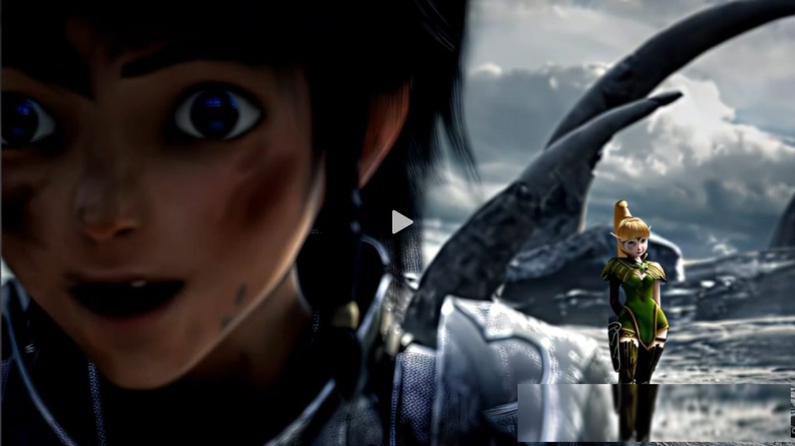
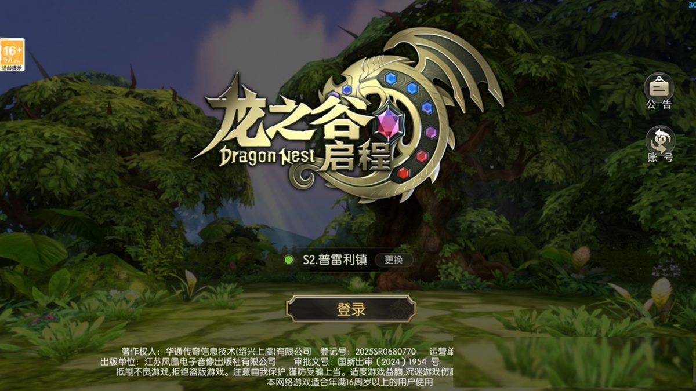
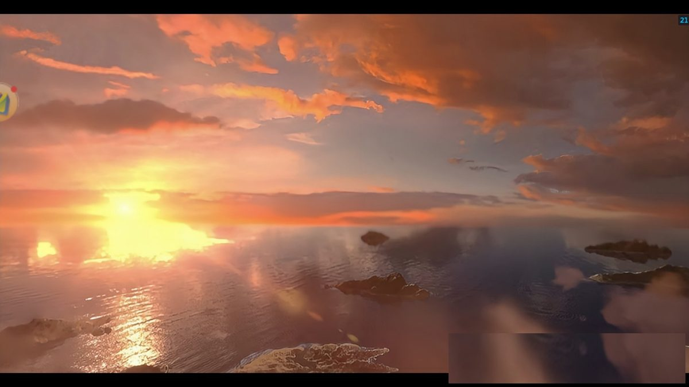
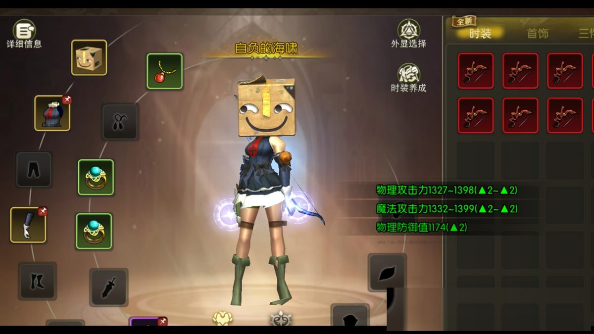

时隔十六年，为什么无数谷迷选择重回《龙之谷：启程》？

时隔十六年，为什么无数谷迷选择重回《龙之谷：启程》？
在快餐化手游泛滥的当下，我们似乎很难再找到一款纯粹的冒险游戏。流水线式的自动挂机、千篇一律的站桩数值对战、割裂的剧情玩法，让很多老玩家渐渐失去了游戏的热忱。始终找不到当年熬夜开荒、组队屠龙的那份赤诚与快乐。
直到《龙之谷：启程》上线，无数老谷迷重新点开了阿尔特里亚大陆的入口。这一次，不是怀旧滤镜的加持，不是跟风试水的新鲜感，而是这款游戏真正读懂了所有玩家的执念：还原初心，拒绝敷衍，把纯粹的动作冒险还给每一位冒险家。
不同于市面上换皮复刻、无脑减负的情怀手游，《龙之谷：启程》没有消费玩家的青春回忆，而是以全新的姿态重启经典，在保留端游核心灵魂的同时，适配移动端体验，兼顾老玩家的情怀与新玩家的入坑体验，打造出独属于龙之谷的全新冒险篇章。
01 不是复刻怀旧，是原汁原味的青春回归
对于每一位谷迷而言，龙之谷从来不止是一款游戏，更是一段专属青春记忆。提起神圣天堂的恢弘主城、狂风森林的青葱绿意、莲花沼泽的静谧秘境，无数人的思绪都会被拉回十六年前，那个和队友并肩开荒、反复挑战巢穴的纯粹时光。
市面上很多情怀续作，往往只复刻了场景和画风，却丢掉了游戏最核心的灵魂。但《龙之谷：启程》做到了真正的全方位还原，精准拿捏了老玩家的情怀痛点。游戏1:1复刻端游经典地图场景，熟悉的建筑布局、地貌风景完美重现，搭配原汁原味的原版BGM和经典NPC建模，踏入游戏的瞬间，满满的回忆扑面而来。
没有魔改剧情，没有乱加设定，阿尔特里亚大陆的世界观完整延续。曾经让人热血沸腾的屠龙剧情、治愈人心的支线故事悉数保留，每一段剧情、每一处场景，都是熟悉的模样。更难得的是，游戏摒弃了当下手游的快餐套路，不逼氪、不内卷、不强制挂机，回归手动操作、组队开荒、机制博弈的核心玩法，彻底告别数值碾压的无聊体验。
老玩家回归，能瞬间找回当年的手感；新手入坑，也能沉浸式感受经典IP的魅力，不用被繁杂的氪金系统裹挟，只需要专注于冒险本身。

02 硬核无锁定战斗，重塑动作游戏天花板
如果说剧情场景是龙之谷的情怀底色，那么无锁定3D动作战斗，就是这款游戏经久不衰的核心灵魂。在全员自动站桩的手游时代，《龙之谷：启程》逆势而行，坚守系列标志性的硬核动作体系，拒绝无脑数值站撸，让每一场战斗都充满操作与博弈的乐趣。
游戏彻底摒弃了传统MMORPG的站桩输出模式，采用全自由无锁定战斗机制，角色移动、视角调整、技能释放完全解绑。玩家可以通过走位、翻滚闪避、绕背牵制、浮空连击、硬直控制打出多元化连招，每一次技能释放、每一次闪避反击，都考验着玩家的操作预判和临场反应，操作上限极高。
针对移动端操作痛点，制作团队进行了精细化优化。自适应虚拟摇杆搭配可调节灵敏度，完美适配手机操作逻辑，大拇指即可轻松覆盖所有常用技能。同时加入智能辅助瞄准功能，既保留了无锁定战斗的自由性，又降低了移动端精准施法的难度，新手好上手，老手有操作空间。
战士的冲锋斩击、法师的范围法术、弓箭手的远程牵制、牧师的攻防辅助，四大经典职业特色鲜明，15级即可解锁双转职，八大流派定位清晰、各有侧重，没有弱势职业，只有适配不同玩法的风格选择。技能EX进阶系统更是大幅丰富了玩法深度，核心技能升级后不仅属性提升，特效与实战机制全面优化，连招丝滑流畅，打击反馈饱满真实，镜头微震、专属音效、粒子特效三重加持，每一次对战都极具沉浸感。

03 拒绝单机内卷，组队冒险才是终极浪漫
很多手游越玩越孤独，全程单机挂机，玩家之间零互动、无羁绊，所谓的多人玩法只是摆设。但龙之谷的初心，从来都是“并肩冒险”，《龙之谷：启程》完整延续了这一核心，把多人协作的乐趣拉满。
游戏的核心玩法围绕巢穴开荒、深渊闯关、团队副本展开，没有单人碾压的通关捷径，唯有队友配合、机制拆解、分工协作，才能攻克难关。开荒过程中，会失误、会灭团、会反复重试，但正是这样的磨合过程，让队友之间的羁绊愈发深刻，这也是当年无数玩家沉迷龙之谷的核心原因。
在这里，没有高强度的爆肝压力，没有严苛的战力内卷。无论是每天闲暇上线的休闲玩家，还是喜欢钻研机制的硬核玩家，都能找到属于自己的玩法节奏。休闲党可以漫游大世界、解锁支线奇遇、打卡经典场景，感受阿尔特里亚的治愈氛围；硬核玩家可以组队攻坚高难巢穴，挑战极限操作，解锁专属成就与奖励。
同时游戏开放自由公会体系，玩家可以集结伙伴组建冒险小队，日常组队刷图、互帮互助，不用再混迹野队、独自开荒。没有勾心斗角，没有战力歧视，只有一群热爱龙之谷的同好，重温当年“四人屠龙、并肩前行”的纯粹热血。

04 新旧共生，经典IP的全新启程
情怀从不是固步自封，经典也需要与时俱进。《龙之谷：启程》最亮眼的地方，在于守得住初心，也跟得上时代。它没有一味照搬端游老内容，而是在保留核心玩法与情怀底蕴的基础上，进行全方位的画质升级与细节优化。
全新高清光影引擎加持，让经典场景焕然一新，光影动态效果细腻逼真，角色建模精致立体，技能特效华丽却不浮夸，兼顾了复古画风与现代审美。开放式大世界不再局限于固定副本关卡，地图中隐藏着随机动态事件、隐秘谜题、专属奇遇，自由探索的乐趣拉满，每一次漫游都能发现全新惊喜。
玩法层面，游戏剔除了端游繁琐的冗余设定，简化了不合理的养成机制，保留核心乐趣，减负不减体验。没有强制任务、没有氪金碾压，养成节奏平缓，所有核心装备、材料均可通过副本玩法获取，平民玩家和氪金玩家的差距极小，真正做到公平游戏、纯粹娱乐。
对于老谷迷而言，这款游戏是一场迟到的重逢。时隔十六年，我们褪去年少的青涩，不再熬夜通宵，但依然热爱这片阿尔特里亚大陆。在这里，我们可以重拾当年的热血，弥补青春的遗憾，和旧友重逢，与新伙伴相遇。
对于新玩家而言，这是一次绝佳的入坑契机。不用追溯繁杂的前代剧情，不用追赶老旧版本进度，从零开始解锁经典冒险，感受正统动作MMORPG的魅力，告别快餐手游的枯燥与乏味。
时光更迭，热爱不减。阿尔特里亚的风再次吹起，熟悉的龙啸响彻大陆。如果你厌倦了千篇一律的快餐手游，怀念纯粹的组队冒险与硬核动作博弈，不妨走进《龙之谷：启程》，和我一起组队冒险
这一次，不负等待，不负热爱，和万千谷迷一起，重启屠龙之旅，奔赴一场跨越十六年的青春冒险。